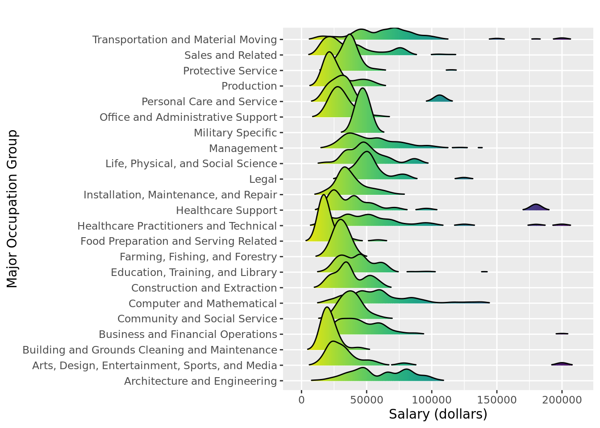

Website STW
Home
Job Ads
VA GO Region 1
VA GO Region 2
VA GO Region 3
VA GO Region 4
VA GO Region 5
VA GO Region 6
VA GO Region 7
VA GO Region 8
VA GO Region 9
Skill Density
VA Go Region 1
VA Go Region 2
VA Go Region 3
VA Go Region 4
VA Go Region 5
VA Go Region 6
VA Go Region 7
VA Go Region 8
VA Go Region 9
Certifications
Job Ads density in VA GO Region 3
Distribution of salaries in VA GO Region 3

Source: Burning Glass Technology, 2019.